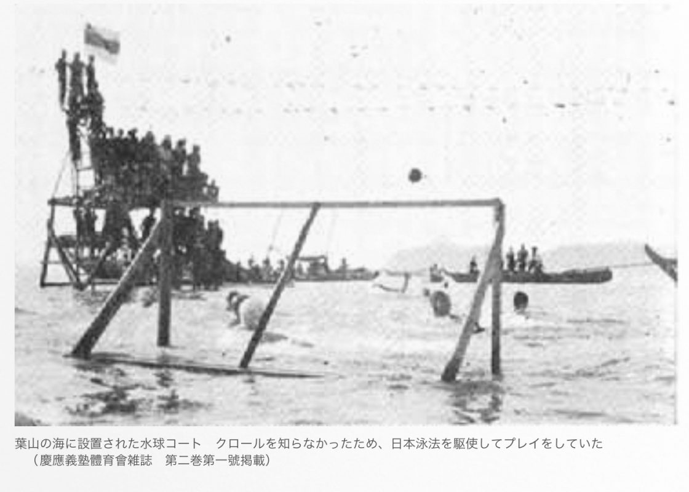
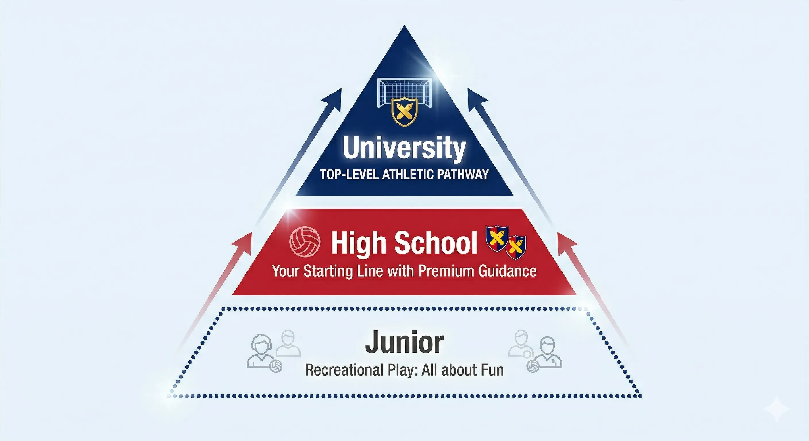
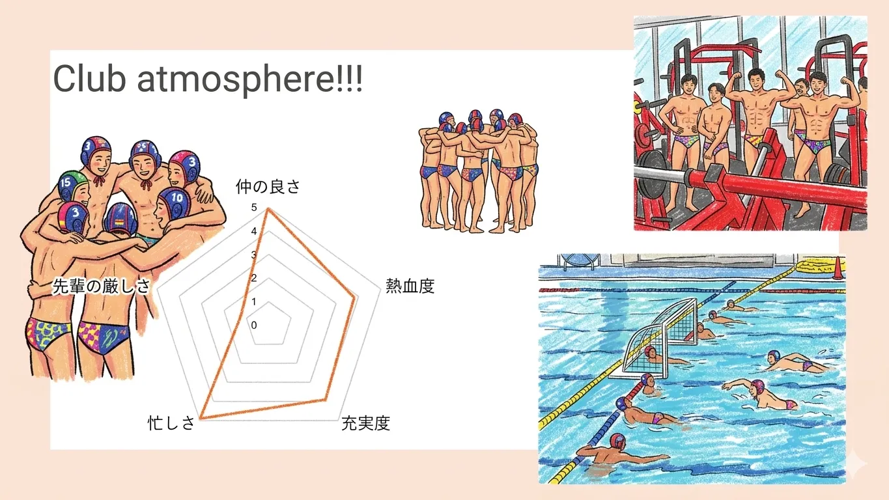

水中の格闘技。恵まれた環境で、新しい挑戦を。
慶應義塾水球部の誇りと、受け継がれるDNA。
歴史と伝統を大切にしながら、毎日新しい自分たちにアップデートしていくことを目標にしています。
長い歴史を持つ慶應水球部。先輩たちの思いを受け継ぎながら、常に進化を続けています。

大学のトップチームを目標に、中学生から大学生までが連携して強くなる仕組みがあります。

体力と考える力の両方が身につく、魅力的なスポーツです。
圧倒的なスピード感と迫力。他にはないチームプレーの楽しさを味わえます。
協生館プールでの練習にくわえ、社会人や大学生のコーチが丁寧に指導します。
大半の部員が高校から水球を始めています。みんなで教え合い、一緒に成長できます。
本気で全国を目指すからこそ、オンとオフのメリハリを大切にしています。

短い練習時間で、集中して上達するスケジュールです。
15:20 〜 18:00
9:00〜12:00 / 15:00〜18:00
週1〜2回実施
週1回（試合予定などに合わせて変動）
全国大会を目指す、1年間のスケジュールです。
こんな人を待っています！私たちと一緒に成長しましょう。
高い目標を持ち、チームと一緒に最後まで頑張れる人。
水球は頭を使うスポーツです。状況を見て、自分で判断する力が身につきます。
目標に向かう日々を一緒に乗り越え、一生モノの絆を築ける仲間ができます。
まずは気軽に見学に来て、水球部の雰囲気を体感してください！